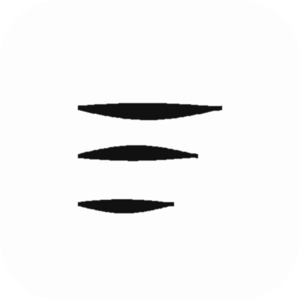
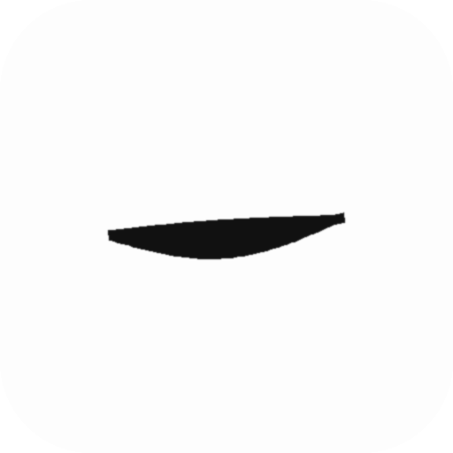
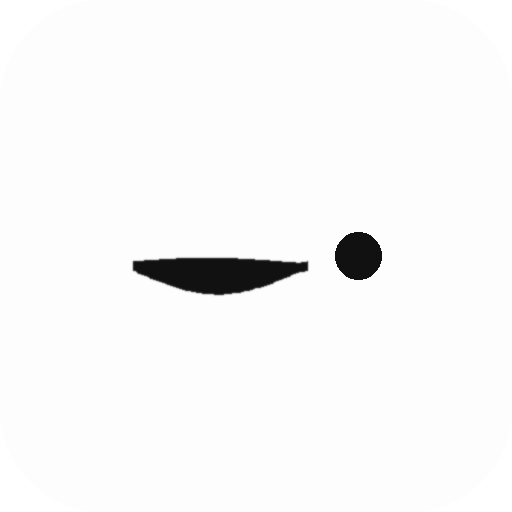
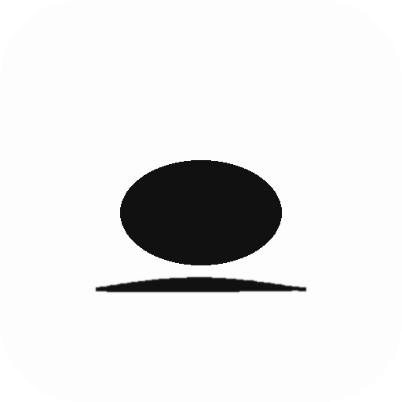
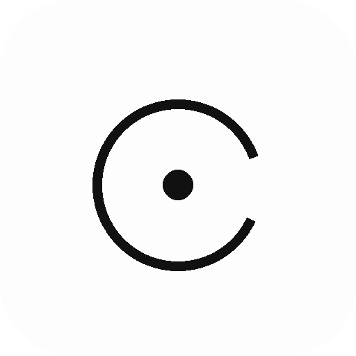

Quick and rough on purpose. Each shown at 96 / 48 px on light + dark. A (ensō) and B (leaf) from round 1 are still in the running.
A sheet with a dog-eared corner. Reads "document" instantly.
A page of writing, abstracted to three brush lines.

A single breath of ink. The most kanso thing possible.

A pause, then a thought. Quiet and a little playful.

A smooth zen stone at rest. Calm, grounded.

Open space around a point of focus. Close cousin of the ensō.

A light quill. Soft nod to writing, keeps the green.